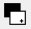
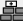

Introduction
This tutorial will show how to setup instantVision in order to track image markers. We assume, that you have already understood the usage of code based markers as described in the marker tracker tutorial. The implementation is very similar to a code based approach, but instead of a marker code we will provide an image to the vision system. Image markers might be a good replacement for code based markers, as they appear more natural.
This tutorial will describe the following aspects:
- Choosing/Preparing a propriate image
- Setting up the image for the vision system
- Testing of a marker tracker in instantVision
You will need the following:
- Maybe some graphic manipulation program (i.e. Gimp, Photoshop etc..)
- Printer connected to your PC
- A camera, supported by instantVision (i.e. a webcam, uEye, pointGrey ...)
- 20-30min. of time
Preparing the image
First, we have to tell you some general aspects of the image marker tracker. Like in the code based marker tracker, the vision system generally searches for a frame inside the accuired camera image. This usually is a bright rectangular field on a black ground or reversed. Based on this frame a new captured image will be cut out and compared to an existing one. Once found, using the specified dimensions and including the camera parameters (intrinsics) a camera pose (extrinsics) will be calculated. So when preparing an image you might need to generate two images. One for tracking, having a frame and for printing out, and one for matching, without a frame.
Generally the image marker tracker is based on grey pictures. If you like, you can also create a black image on a white ground. In the scope of this tutorial, you can either create your own image, or just use the supplied ones, that can be downloaded at the bottom of this page. Anyway some points will maybe make the image marker work better:
- Prefer to use non symetric images
- Use images with high contrast and sharp contours
- The image should somehow standout in relation to the surroundings
- The image has to be rectangular
Defining the image marker in instantVision
Now, as you have your images lets have a look at how they are integrated into an instantVision file. The printed example below shows just the definition of an image marker inside a .pm file, that can be loaded by the vision system inside instantVision or instantReality. The full example can be found at the bottom of the page.
Code: Part of image marker definition inside the pm file
<World ....
<TrackedObject key="instantLogo">
<ExtrinsicData calibrated="0">
....
</ExtrinsicData>
<ImageMarker fileName="project_dir:\InstantReality.jpg" key="myImageMarker" markerBorder="0.01">
<Points3D nb="4">
<HomgPoint3d w="1" x="0" y="2" z="0"/>
<HomgPoint3d w="1" x="7" y="2" z="0"/>
<HomgPoint3d w="1" x="7" y="0" z="0"/>
<HomgPoint3d w="1" x="0" y="0" z="0"/>
</Points3D>
</ImageMarker>
...
</TrackedObject>
As you can see, instead of a Marker element an ImageMarker-Element is used. The fileName-Attribute represents the image file to be loaded on initialization. You can either provide a full path name or place a "project_dir:\", which referres to the exact same path where the loaded .pm file resides.
The markerBorder-attribute describes the border to be ignored when comparing the cut out image with the saved one. The cut out image sometimes has a small border of the surrounding left and this should be ignored. Changing this value sometimes helps increasing the matching quality and thus can be changed. The value is given in percent divided by 100.
Testing the image marker in instantVision
We assume that you have already tried out the simple marker tutorial and maybe the marker tutorial for two objects. Within this tutorial we will not focus so much on the X3D integration as this already has been described inside the other marker tracker tutorials. We will rather show you some hints on using instantVision for testing your marker definitions and enhancing tracking quality.
Best is to download the files at the bottom and put them in one directory. You can also download the zip archive and unpack it into one folder.
Then the following steps have to be done:
- Start instantVision
- Be sure you have instantImageMarkerTracking.pm, CoordFrame.wrl and instantReality.jpg in one directory
- Load the instantImageMarkerTracker.pm file
- Configure the camera for your needs. Therefore double click on the VideoSourceAction inside the ActionManager on the right hand side. A dialog will pop up showing you a camera to be selected. By default, the downloaded .pm file is configured to be used with a standard DirectShow interface (on Win32). On a Mac, the internal camera will be used. If you want to use an external camera on a mac 'ds://channel=1' has to be entered for the source_url attribute inside the instantImageMarkerTracker.pm file in line 10. This means that you might be able to connect any casual web cam. Anyway, on Windows, you can configure instantVision to use different types of cameras in arbitrary modes. Best would be a resolution of 640x480.
- Press the init button ()
- Create a viewer window ()
- Press the play button ()
- Drag the VideoSourceImage from the data set and drop into the viewer. You should now be able to see the live image of the camera. HINT: Be sure to enable the update checkbox below the data set viewer in order to see the updated data set and VideoSourceImage item while running in play mode.
Now put the printed out image marker in front of the camera. The data set should hold a key called MarkerTrackerInternalContour. This is generated by the ImageMarkerTracker and represents the detected contours inside the live camera image. By dragging this into the viewer, you will be able to see the detected contours. At least one contour has to cover the white instantReality logo in order to make the image marker tracker working. You can change the behaviour through the ImageMarkerTracker properties, which can be opened by double clicking on the ImageMarkerTracker inside the ActionManager on ther right hand side of the instantVision window.
The action properties are divided into keys and attributes. Where keys refer to data set objects and attributes configure the behaviour of the action inside the action pipe itself. By double clicking on the value inside the value column of the attributes section you can directly modify the behaviour usually in runtime.
It follows a short explanation of the parameters that may be changed in order to adapt the image marker tracking for your needs.
-
ExtractorMode - There are two algorithms for detecting contours.
If set to zero, a light invariant version of a contour detection will be used.
All attributes beginning with the word "Contour" will change its properties then.
You can identify the mode easily as the contour will be displayed in green color.
Another verison of contour detection can be used, setting it to 1.
All the attributes beginning with "Silhouette" can then change its behaviour.
When changing this option, please do a complete init by pressing the init
button () again in order to let the action reorganize its internal action pipe.
In Mode 0: (Detection using fast non linear suppression)
- ContourMaxArea - Defines the maximal size of the contour, this usually is set to a high value as we want big contours (i.e. the marker very near to the camera also to be detected)
- ContourMinArea - Defines the minimal size of the contour, this usually is set to 1000 pixel but can also be lower. Increase this if too many small contours are detected.
- ContourThreshold - Defines the relation between bright and non bright border. A low value will detect more shifts as contours.
In Mode 1: (Silhouette extraction non-adaptive)
- SilhouetteInverted - Defines the way the contour will be processed.(Clock wise or counter clock wise) You can turn around the coordinate system of the resulting detection using this flag!
- SilhouetteNumContourPts - Defines the minimal size of the contour, this usually is set to 500 pixel but can also be lower. Increase this if too many small contours are detected.
- SilhouetteThreshold - Defines the absolute threshold between bright and non bright border in the grey scale image. This should be adapted to your needs and lightning conditions, as this methode of contour extraction is NOT light invariant. If you experience different light conditions inside your setup. You might better use extraction mode 0.
- InvertMarkerFrame - If you have a white on black image you might need the image to be inverted before detecting the contours. This can be accomplished by setting this flag to 1. Anyway the cut out image will not be matched with the inverted one. It will be just used for detecting contours.
- ValidationLevel - Internally an image pyramide with 3 images on different resolutions will be built up. When an image has been cut out it will fist be matched with a low resolution (3) version of the image associated with the image marker. If it apprears to match, it tries the next higher level. This parameter restricts the matching algorithm to the given level. So a 3 might be very tolerant but not very reliable, when having very similar images. The default value is 2.
- DetectionThreshold - The minimal error for the first level matching.
- ValidationThreshold - The validation threshold for the image matching. By watching the ActualError attribute a you can find and set the optimal value for your setup.
- ActualError - This is a read only value showing the actual error of an matched image. This will only change when you hover around with the mouse over it. It is a good indicator for the quality of image matching and usually just changes if a valid contour is displayed and a proper image could be matched.
Once you have configured your contour detection parameters to fit your image in the situations of your needs it is the time to test your config by augmenting the image with a 3D model. You can load the CoordFrame.wrl by pressing the add data button (). InstantVision also needs to know which perspective it has to render the model. So simply drag the InstantCamera object from the data set into the viewer. The viewer will configure itself for displaying the model and the camera on top of the picture. You can verify or modify this information by pressing the small button on the lower right corner of the viewer window and toggeling the status bar. An additional dialog will be appended for the viewer, allowing to show the propriate configuration of the viewer.
At this point you may wonder why the viewer gets totally black sometimes when the marker gets out of scope. This happens usually when the estimated pose is not valid, due to a not recognized contour or image. Then the viewer does not know, from which perspective the configured model should be rendered. When interfacing with instantReality, this sometimes might be a problem, as you maybe always want a valid camera pose.
A solution to this problem can be using the last valid used pose instead. So flickering can be prevented. This is done by a by default not activated action called "IfAction". This action allows checking if the current pose is valid. If it is not, it just copies the last valid one to the current one. And if it is valid, the last valid pose will be overwritten by the current one. You can try it out by enabling the action. The ActionManager is a tree view and you can open it up like in a file explorer. You will notice 2 action pipes, which itself can hold a series of actions, as you can see them in the root of the tree view. The first action pipe will always be executed if the condition specified inside the "IfAction" is true. Else the other one will executed.
In this case the condition looks like this:
Code: IfCondition for checking the invalidity of an estimated camera pose of the tracked object
[World.instantLogo.ExtrinsicData:PoseValid]!=1
If everything worked fine, you just configured a nice image marker tracker for yourself. You can also use this one inside instantReality. Beware that you might have to prepare the .pm file by saving it to a new name. You will have to reopen it with a text editor in order to remove the "MegaWidgetActionPipe" element which represents the viewer and can not be loaded by the instantReality system. The rest can remain the same.
Basically the InstantCamera object will be transfered to instantReality in order to be routed to a ViewFrustum or inverted to an object to be represented. If you want you can download the ImageMarkerTrackerTest.x3d at the bottom of the page and try it out. You maybe have to change it and replace the given .pm file with your newly created one.
- Image Marker to Print (with Frame)
- Image Marker to recognize (without Frame)
- Image Marker Tracker (instantVision configuration file)
- Test for augmented image marker tracking using instantReality
- Choordinate Frame in VRML format
- Animated flipper for augmentation in X3D in VRML format
- All the files in one zip archive
{kind=link}